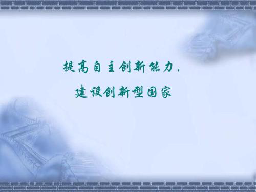
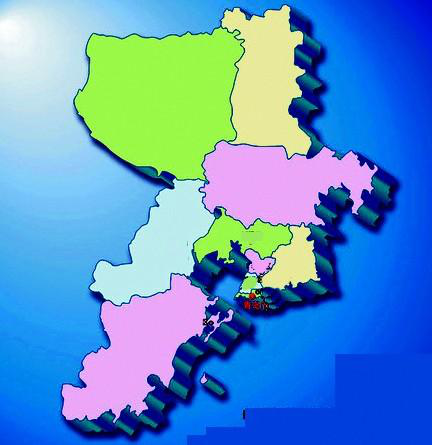

今天上午9点，中国共产党第十九次全国代表大会开幕会在人民大会堂举行，习近平总书记向大会作报告。本次大会的主题是：不忘初心，牢记使命，高举中国特色社会主义伟大旗帜，决胜全面建成小康社会，夺取新时代中国特色社会主义伟大胜利，为实现中华民族伟大复兴的中国梦不懈奋斗。

习近平总书记对我国过去五年的工作和历史性变革作了总结，对经济建设的总结是习近平总书记讲话中的第一大篇章。
回顾过去五年，我国经济建设取得重大成就，经济保持中高速增长，在世界主要国家中名列前茅，国内生产总值从从五十四万亿元增长到八十万亿元，稳居世界第二，对世界经济增长贡献率超过百分之三十。
供给侧结构性改革深入推进，经济结构不断优化，数字经济等新兴产业蓬勃发展，高铁、公路、桥梁、港口、机场等基础设施建设快速推进。
农业现代化稳步推进，粮食生产能力达到一万二千亿斤。城镇化率年均提高一点二个百分点，八千多万农业转移人口成为城镇居民。区域发展协调性增强，“一带一路”建设、京津冀协同发展、长江经济带发展成效显著。重要领域百花齐放，不一而足。展望未来，习近平总书记指出，必须坚定不移把发展作为党执政兴国的第一要务，坚持解放和发展社会生产力，坚持社会主义市场经济改革方向，推动经济持续健康发展。

1、深化供给侧结构性改革
建设现代化经济体系，必须把发展经济的着力点放在实体经济上。加快建设制造强国，加快发展先进制造业，推动互联网、大数据、人工智能和实体经济深度融合，在中高端消费、创新引领、绿色低碳、共享经济、现代供应链、人力资本服务等领域培育新增长点、形成新动能。
支持传统产业优化升级，加快发展现代服务业，瞄准国际标准提高水平。促进我国产业迈向全球价值链中高端，培育若干世界级先进制造业集群。
加强水利、铁路、公路、水运、航空、管道、电网、信息、物流等基础设施网络建设。坚持去产能、去库存、去杠杆、降成本、补短板，优化存量资源配置，扩大优质增量供给，实现供需动态平衡。
激发和保护企业家精神，鼓励更多社会主体投身创新创业。建设知识型、技能型、创新型劳动者大军，弘扬劳模精神和工匠精神。
2、加快建设创新型国家
要瞄准世界科技前沿，强化基础研究，实现前瞻性基础研究、引领性原创成果重大突破。为建设科技强国、质量强国、航天强国、网络强国、交通强国、数字中国、智慧社会提供有力支撑。
深化科技体制改革，建立以企业为主体、市场为导向、产学研深度融合的技术创新体系，加强对中小企业创新的支持，促进科技成果转化。

3、实施乡村振兴战略
要坚持农业农村优先发展，按照产业兴旺、生态宜居、乡风文明、治理有效、生活富裕的总要求，建立健全城乡融合发展体制机制和政策体系，加快推进农业农村现代化。
巩固和完善农村基本经营制度，深化农村土地制度改革，完善承包地“三权”分置制度。保持土地承包关系稳定并长久不变，第二轮土地承包到期后再延长三十年。深化农村集体产权制度改革，保障农民财产权益，壮大集体经济。
构建现代农业产业体系、生产体系、经营体系，完善农业支持保护制度，发展多种形式适度规模经营，培育新型农业经营主体，健全农业社会化服务体系，实现小农户和现代农业发展有机衔接。促进农村一二三产业融合发展，支持和鼓励农民就业创业，拓宽增收渠道。
4、实施区域协调发展战略
加大力度支持革命老区、民族地区、边疆地区、贫困地区加快发展，强化举措推进西部大开发形成新格局，深化改革加快东北等老工业基地振兴，发挥优势推动中部地区崛起，创新引领率先实现东部地区优化发展，建立更加有效的区域协调发展新机制。
以城市群为主体构建大中小城市和小城镇协调发展的城镇格局，加快农业转移人口市民化。以疏解北京非首都功能为“牛鼻子”推动京津冀协同发展，高起点规划、高标准建设雄安新区。以共抓大保护、不搞大开发为导向推动长江经济带发展。支持资源型地区经济转型发展。加快边疆发展，确保边疆巩固、边境安全。坚持陆海统筹，加快建设海洋强国。
5、加快完善社会主义市场经济体制
要完善各类国有资产管理体制，改革国有资本授权经营体制，加快国有经济布局优化、结构调整、战略性重组，促进国有资产保值增值，推动国有资本做强做优做大，有效防止国有资产流失。
深化国有企业改革，发展混合所有制经济，培育具有全球竞争力的世界一流企业。全面实施市场准入负面清单制度，清理废除妨碍统一市场和公平竞争的各种规定和做法，支持民营企业发展，激发各类市场主体活力。
深化商事制度改革，打破行政性垄断，防止市场垄断，加快要素价格市场化改革，放宽服务业准入限制，完善市场监管体制。
深化投融资体制改革，发挥投资对优化供给结构的关键性作用。加快建立现代财政制度，建立权责清晰、财力协调、区域均衡的中央和地方财政关系。
深化税收制度改革，健全地方税体系。深化金融体制改革，增强金融服务实体经济能力，提高直接融资比重，促进多层次资本市场健康发展。
健全货币政策和宏观审慎政策双支柱调控框架，深化利率和汇率市场化改革。健全金融监管体系，守住不发生系统性金融风险的底线。
6、推动形成全面开放新格局
要以“一带一路”建设为重点，坚持引进来和走出去并重，遵循共商共建共享原则，加强创新能力开放合作，形成陆海内外联动、东西双向互济的开放格局。拓展对外贸易，培育贸易新业态新模式，推进贸易强国建设。
赋予自由贸易试验区更大改革自主权，探索建设自由贸易港。创新对外投资方式，促进国际产能合作，形成面向全球的贸易、投融资、生产、服务网络，加快培育国际经济合作和竞争新优势。
另外值得关注的是，习近平总书记强调，中国特色社会主义进入新时代，我国社会主要矛盾已经转化为人民日益增长的美好生活需要和不平衡不充分的发展之间的矛盾。

所以，在全面建设社会主义现代化国家的新征程上，大家撸起袖子加油干吧！
本文系作者授权百度百家发表，未经许可，不得转载。